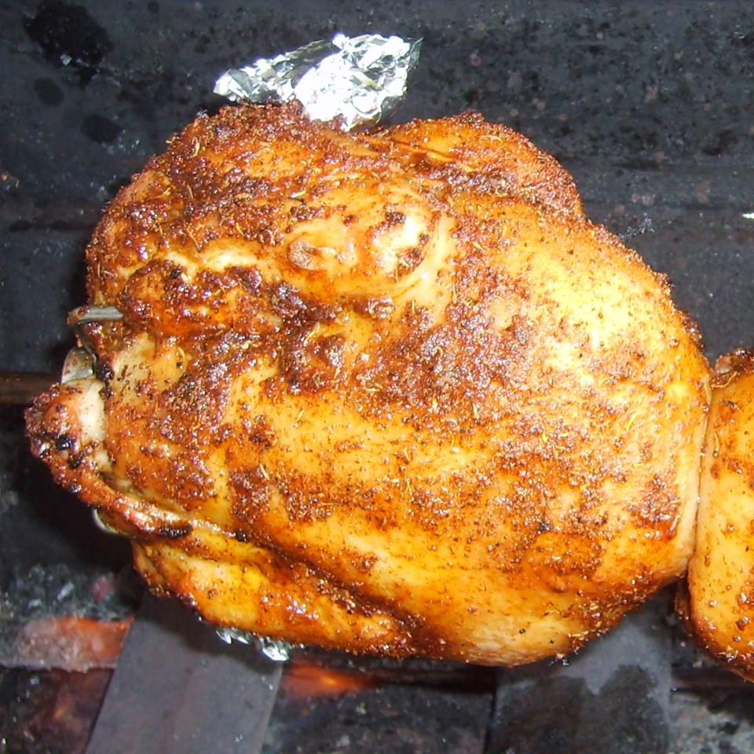

Rotisserie Chicken

Better than Costco!
Okay, not really, but this is some good tasting chicken. It's perfect as the main dish of a simple meal with French fries and cole slaw.
Ingredients:
- 1 (3 pound) whole chicken
- 1 pinch salt
- ¼ cup butter, melted
- 1 tablespoon salt
- 1 tablespoon paprika
- ¼ tablespoon ground black pepper
Steps:
- Season the inside of the chicken with a pinch of salt. Place the chicken onto a rotisserie and set the grill on high. Cook for 10 minutes.
- During that time, quickly mix together the butter, 1 tablespoon of salt, paprika and pepper. Turn the grill down to medium and baste the chicken with the butter mixture. Close the lid and cook for 1 to 1 1/2 hours, basting occasionally, until the internal temperature reaches 180 degrees F (83 degrees C) when taken in the thigh with a meat thermometer.
- Remove from the rotisserie and let stand for 10 to 15 minutes before cutting into pieces and serving.